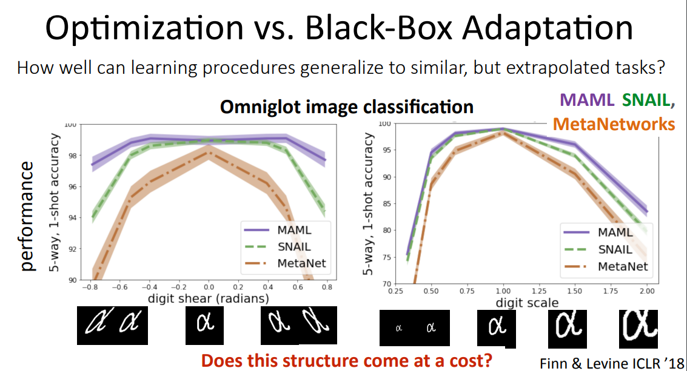
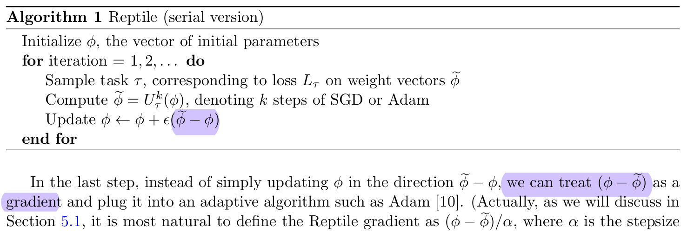

4 Lecture. Optimization-based Meta Learning (MAML)
Contents
4 Lecture. Optimization-based Meta Learning (MAML)#
Organization: 가짜연구소 (Pseudo Lab) Editor: 이홍규 강의 자료: CS330 2020 Fall 강의 영상: Youtube
알고리즘 오버뷰#
Optimization-based Meta Learning의 알고리즘은 다음과 같이 정의할 수 있습니다.
해당 태스크의 support set \((\mathbf x_i^\text{spt}, y_i^\text{spt})\)을 gradient descent 시킴으로써 task-specific parameter vector \(\phi_i\)를 얻는다.
그렇게 얻은 task-specific parameter를 통해 본격적으로 쿼리셋(\(\mathbf x^\text{qry}\))에 대한 inference를 수행한다.
이해를 돕기 위해 pseudo-code를 참고해보도록 하겠습니다.
# Pseudo Code 1
for x_spt, y_spt, x_qry, y_qry in tasks:
y_spt_pred = f(x_spt, θ)
spt_loss = loss(y_spt, y_spt_pred)
ϕ_i = θ - α*grad(spt_loss, θ)
y_qry_pred = f(x_qry, ϕ_i)
qry_loss = loss(y_qry, y_qry_pred)
θ = θ - β*grad(qry_loss, θ)
# Pseudo Code 2 (pytorch api)
meta_optim = optim.Adam(θ, lr=β)
for x_spt, y_spt, x_qry, y_qry in tasks:
meta_optim.zero_grad()
y_spt_pred = f(x_spt, θ)
spt_loss = loss(y_spt, y_spt_pred)
ϕ_i = θ - α*grad(spt_loss, θ)
y_qry_pred = f(x_qry, ϕ_i)
qry_loss = loss(y_qry, y_qry_pred)
qry_loss.backward()
meta_optim.step()
문제점과 대안#
하지만 기본적으로 vanilla MAML은 과중한 컴퓨팅 코스트를 유발합니다. 그래디언트 디센트로 얻은 task specific parameter를 통해 얻은 최종 Loss를 또 다시 그래디언트 디센트를 하기 때문입니다. 이 문제를 해결하기 위한 어프로치는 다음과 같습니다.
1. \(\cfrac{d\phi_i}{d\theta}\)를 \(I\)로 간주하기
최종적으로 우리가 계산하는 그래디언트(\(\nabla_\theta \mathcal L\))는 chain rule에 따라 다음과 같이 decompose할 수 있습니다.
그리고 여기서 \(\cfrac{d\phi_i}{d\theta}\)를 \(I\)로 간주하게 된다면, 우리는 \(\cfrac{d\mathcal L}{d\phi_i}\)를 \(\nabla_\theta \mathcal L\)로 취급하겠다는 이야기가 됩니다. 그리고 \(\cfrac{d\mathcal L}{d\phi_i}\)를 계산하는 것은 그냥 일반적으로 supervised learning에서 그래디언트를 계산하는 것과 다를 바가 없어 컴퓨팅 코스트가 낮습니다. (반면, \(\cfrac{d\mathcal L}{d\theta}\)를 계산하는 것은 컴퓨팅 코스트가 매우 큽니다!)
물론 \(\cfrac{d\phi_i}{d\theta} \approx I\)는 굉장히 무식한 approximation처럼 보일 수 있습니다. 하지만 Chelsea Finn 교수님의 말씀에 따르면, 심플한 퓨샷 태스크에서는 잘 동작한다고 합니다. 다만 태스크의 난이도가 복잡해지면 좋은 효과를 기대하기가 어렵다고 합니다.
2. 헤드 부분만 옵티마이즈하기
모델 파라미터 전체를 task-specific 파라미터로써 그래디언트 디센트하는 것이 아니라, 모델의 헤드 부분(모델의 마지막 레이어)만을 task-specific 파라미터로써 그래디언트 디센트한다면 이것 역시 컴퓨팅 코스트를 줄일 수 있는 좋은 대안이 될 수 있을 것입니다.
Appendix A: create_graph=True (PyTorch)#
파이토치의 backward 메서드나 autograd함수에는 create_graph=True라는 옵션을 설정할 수 있습니다. create_graph를 True로 설정되면 autograd를 통해 계산된 그래디언트 벡터에서도 computation graph가 계속 이어집니다! 이를 통해 task-specific parameter \(\phi_i\)를 계산하고, 다시 그걸 바탕으로 최종 Loss (\(\mathcal L(\mathbf y_i^\text{qry}, f(\mathbf x_i^\text{qry};~\phi_i))\))를 산출하고 거기서 다시 backward를 실행해도 정상적으로 back-propagating이 원래의 파라미터 \(\theta\)에까지 전달될 수 있습니다.
create_graph 옵션의 디폴트가 False인 이유
create_graph 옵션의 디폴트는 False입니다. 일반적인 supervised learning task에서는 그래디언트 벡터에서 추가적으로 computational graph를 계속 이어갈 이유가 없기 때문입니다.
With
create_graph=True, we are declaring that we want to do further operations on gradients, so that the autograd engine can create a backpropable graph for operations done on gradients.
retain_graph=Truedeclares that we will want to reuse the overall graph multiple times, so do not delete it after someone called.backward(). From looking at the code, we do not call.backward()on the same graph again, soretain_graph=Trueis not needed in this case.
Appendix B: Black-box Meta Learning vs. MAML#

위의 자료를 보면 결국 MAML은 데이터 왜곡에 좀 더 robust한 것으로 나타납니다.
해당 태스크의 서포트셋을 gradient descent를 통해 학습하기 때문에, 기존 분포에 벗어난 데이터에도 블랙박스 메타러닝 모델들에 비해 robust한 경향을 보이는 것 같습니다.
Appendix C: Reptile#

위의 Reptile 알고리즘은 앞서 언급했던 \(\cfrac{d\phi_i}{d\theta} \approx I\) 로 간주해서 \(\cfrac{d\mathcal L}{d \phi_i} \approx \nabla_\theta \mathcal L \left(\mathbf y_i^\text{qry}, f(\mathbf x_i^\text{qry}, \phi_i)\right)\)라는 근사식을 얻는 알고리즘과 유사한 접근방법 같습니다. Reptile에서는 \(\phi_i - \theta\)를 그래디언트 \(\nabla_\theta \mathcal L \left(\mathbf y_i^\text{qry}, f(\mathbf x_i^\text{qry}, \phi_i)\right)\)로 취급합니다. 사실 구체적인 수학적 유도 과정이 있기는 한데, 이건 나중에 기회가 되면 다뤄볼까 합니다.
참고자료들#
“dragen1860/MLML-Pytorch”(github). Retrieved October 06, 2022.
Chelsea Finn(2020). “Stanford CS330: Deep Multi-task & Meta Learning | 2020 | Lecture 4 - Optimization Meta-Learning” (YouTube). Retrived October 05, 2022.
Chelsea Finn, Pieter Abbeel, Sergey Levine (2017). “Model-Agnostic Meta-Learning for Fast Adaptation of Deep Networks”.
Justin Domke (2009). “Hessian-Vector products”
“When do I use
create_graphin autograd.grad()” (PyTorch Discuss)Open AI (2018). “Reptile: A Scalable Meta- Learning Algorithm”